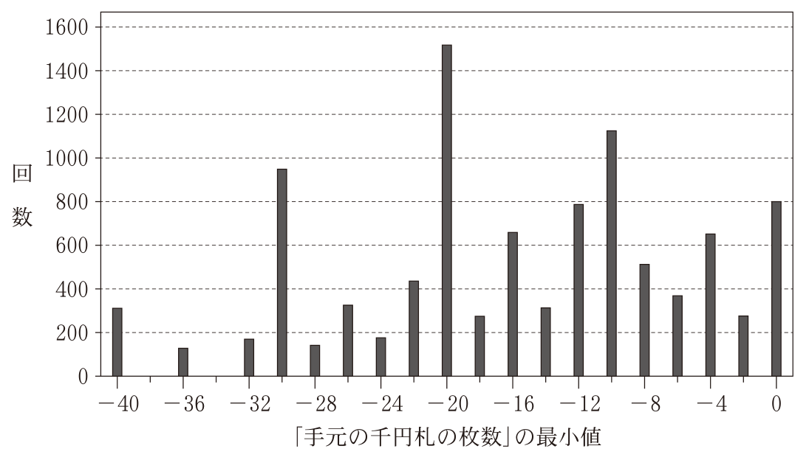

B 次の文章を読み，後の問い（問1～3）に答えよ。
M さんは，あるグループの会計係をしており10人のメンバーから一人6，000円ずつ集めることになった。M さんは，以前集金をしたときにおつりに困ったことがあったので，メンバー全員におつりを渡すための千円札を何枚用意しておくのがよいか，次の条件でシミュレーションすることにした。
シミュレーションは表計算ソフトウェアで1以上10以下の整数が同じ確率で出現する乱数r を用い，次のように考えて行った。
r が3以下の場合：千円札6枚で支払う
r が4以上の場合：一万円札1枚で支払う
問1 次の文章を読み，空欄 コ ～ セ に当てはまる数字をマークせよ。
M さんの手元の千円札の枚数を最初0枚として，シミュレーションをした結果，表1のようになった。
| 乱数rの値 | 手元の一万円札の枚数 | 手元の千円札の枚数 | |
|---|---|---|---|
| 初期値 | ― | 0 | 0 |
| 1人目 | 8 | 1 | −4 |
| 2人目 | 1 | 1 | 2 |
| 3人目 | 6 | 2 | −2 |
| 4人目 | 10 | 3 | −6 |
| 5人目 | 9 | ？ | ？ |
| 6人目 | 4 | コ | ？ |
| 7人目 | 5 | ？ | ？ |
| 8人目 | 3 | ？ | −サシ |
| 9人目 | 7 | ？ | ？ |
| 10人目 | 2 | ？ | ？ |
（表の一部を「？」で隠してある）
1人目が一万円札で支払ったので，おつりとして渡す千円札4枚が不足する。
2人目が千円札6枚で支払ったので，不足していた1人目のおつりを渡し，千円札2枚が残る。
なお，この表の「手元の千円札の枚数」が負の数の場合，M さんが渡さなければならないおつりの千円札が，その数の絶対値の枚数分不足していることを意味する。そこでM さんは，「手元の千円札の枚数」の最小値を調べ，その絶対値の枚数の千円札を事前に準備しておけば，おつりに困らないと考えた。この考えによると，今回行った1回のシミュレーションの場合，千円札 ス セ 枚を事前に準備しておけば，一度も千円札が不足することなく集金できることになる。
問2 M さんは，1回のシミュレーション結果では判断できないと考え，このシミュレーションを10，000回行った。図3は，各シミュレーションでの「手元の千円札の枚数」の最小値を横軸に，その回数を縦軸に表したものである。この結果に関する考察として最も適当なものを，次の⓪～③のうちから一つ選べ。 ソ

問3 次にM さんは，事前に千円札を20枚用意した場合について考えた。この場合，メンバー10人から順に集金した際に起こることがないケースを，次の⓪～③のうちから一つ選べ。 タ